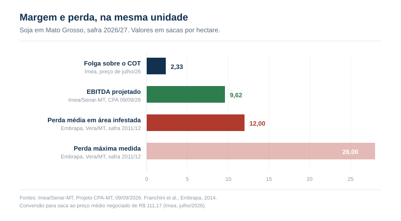
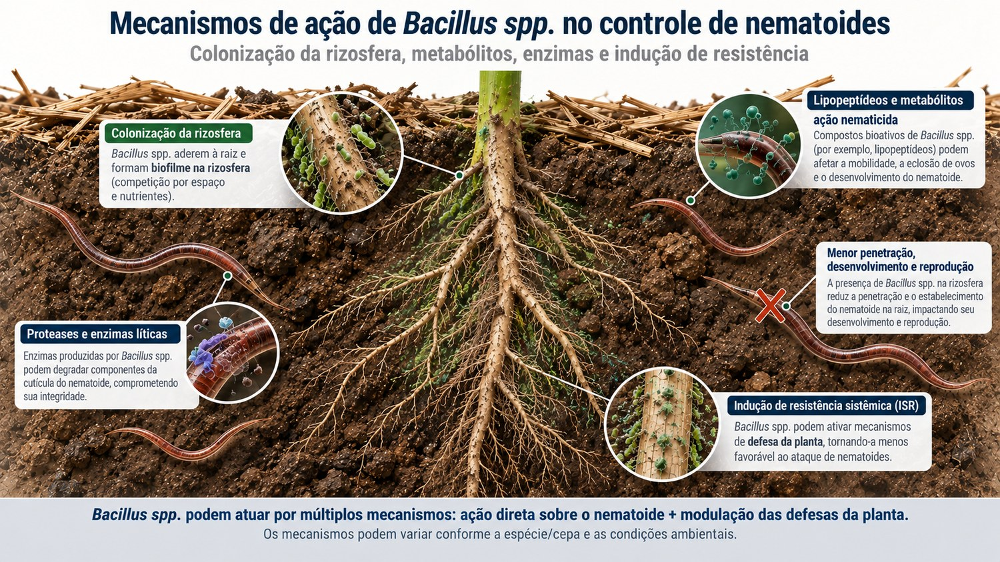

O que o CPA-MT mostrou esta semana
O Projeto Custo de Produção Agropecuário de Mato Grosso, conduzido pelo Senar-MT e pelo Imea, foi apresentado a produtores em Brasnorte em 09 de setembro e divulgado no dia 10. É o levantamento mais completo disponível sobre a safra que começou a ser plantada em Mato Grosso no dia 07.
| Indicador | 2026/27 | Variação |
|---|---|---|
| Área | 13,04 milhões de ha | +0,25% |
| Produtividade projetada | 62,44 sc/ha | -5,43% |
| Produção | 48,88 milhões de t | -5,19% |
| Custeio | R$ 4,32 mil/ha | +3,39% |
| Custo Operacional Efetivo | R$ 6.012,39/ha | |
| Custo Total | R$ 8.171,41/ha | +16,69% |
| EBITDA | R$ 1.069,47/ha | -35,05% |
Fonte: Imea/Senar-MT, Projeto CPA, apresentado em 09/09/2026.
A primeira coisa que salta é a assimetria entre as duas linhas de custo. O custeio, que é o insumo que o produtor compra, subiu 3,39%. O Custo Total subiu 16,69%, quase cinco vezes mais. A diferença não está na lavoura, está no balanço: depreciação e custo de oportunidade do capital investido, itens que o produtor não negocia com a revenda.
O resultado é que a receita bruta projetada não cobre o Custo Total. O EBITDA de R$ 1.069,47 por hectare representa queda de 35,05% sobre a safra anterior e de 53,50% sobre a média das últimas cinco safras. Segundo a analista de custos do Imea, Milena Habeck, o produtor precisa acompanhar os dois pilares que ainda estão em aberto, preço e produtividade, para fechar a rentabilidade da temporada.
Convertendo para saca
O número por hectare esconde a dimensão da coisa. Dividido pela produtividade projetada de 62,44 sacas por hectare:
- Custeio: R$ 69,19 por saca
- Custo Operacional Efetivo: R$ 96,29 por saca
- Custo Total: R$ 130,87 por saca
- EBITDA: R$ 17,13 por saca
Em volume, o EBITDA projetado equivale a 9,62 sacas por hectare, convertido ao preço médio negociado de R$ 111,17 por saca registrado pelo Imea em julho para a safra 26/27. Tudo o que a lavoura gera acima do custo operacional, o ano inteiro de trabalho, cabe em pouco menos de dez sacas.
A folga sobre o Custo Operacional Total é ainda mais estreita. O Imea estimou o ponto de equilíbrio do COT em R$ 107,02 por saca, contra os R$ 111,17 negociados em julho. São R$ 4,15 de folga por saca, ou R$ 259,13 por hectare. Convertido em produtividade, 2,33 sacas por hectare. Uma quebra de 5% na lavoura, equivalente a 3,12 sacas, consome toda essa folga e joga a operação abaixo do custo operacional.

De onde veio a pressão
No levantamento de junho, o Imea já havia apontado que fertilizantes e corretivos subiram 5,40% e defensivos avançaram 10,97% em relação ao ciclo anterior, elevando o ponto de equilíbrio do custeio em 9,13%. Na atualização de agosto, os fertilizantes sozinhos foram estimados em R$ 1.993,21 por hectare, dos quais R$ 1.614,56 em macronutrientes, o maior valor projetado para o ciclo.
Em paralelo, a comercialização antecipada está adiantada. Até agosto de 2026, 39,12% da produção projetada para 26/27 já havia sido negociada, ritmo superior ao do mesmo período do ciclo anterior. Quase 40% da safra já está com preço travado num cenário em que a receita não cobre o Custo Total. O que resta de proteção de margem depende do que acontecer na lavoura.
O passivo que não entra no orçamento
Nenhuma planilha de custo tem uma linha para nematoide. O prejuízo aparece na outra ponta, na produtividade, e é lá que a margem de 9,6 sacas é decidida.
Levantamento da Syngenta com a Agroconsult e a Sociedade Brasileira de Nematologia indica presença de nematoides em mais de 90% das amostras de solo coletadas em áreas agrícolas do Brasil. O tema concentrou o 40º Congresso Brasileiro de Nematologia, realizado em Recife entre 31 de agosto e 3 de setembro.
O dado que importa para quem planta no Médio-Norte é mais antigo e mais específico. Em trabalho conduzido pela Embrapa em Vera, Mato Grosso, na safra 2011/2012, Franchini e colaboradores mediram perdas de até 28 sacas por hectare em área infestada por Pratylenchus brachyurus, com valor médio de 12 sacas por hectare, o equivalente a 21% da produtividade potencial. Há relatos de perdas de até 50% em lavouras comerciais infestadas na região Centro-Oeste.
A comparação dispensa comentário. A perda média medida em área infestada, 12 sacas por hectare, é maior que o EBITDA inteiro projetado para a safra 26/27, de 9,62 sacas por hectare.
E não é um problema que se resolve e encerra. Como resume o pesquisador Waldir Pereira Dias, da Embrapa Soja, quem tem problema com nematoide terá sempre, porque não é possível erradicar. A gravidade varia com o ano e com a condução da lavoura, não com a existência do patógeno.
O que a biologia entrega, e onde ela não entrega
O manejo de nematoide não tem bala de prata. Rotação com plantas não hospedeiras, cultivares com melhor reação, nematicida químico, fungos antagonistas e bactérias antagonistas compõem o mesmo pacote, e a pesquisa é consistente em tratá-los como integrados, não alternativos. Entre essas ferramentas, o tratamento de sementes com bactérias do gênero Bacillus é a que depende de decisão tomada agora, antes de a semeadora entrar.

O que condiciona o desempenho da ferramenta
O desempenho do Bacillus amyloliquefaciens no tratamento de sementes depende menos da dose declarada e mais de três condições operacionais.
O agente precisa chegar antes. A lógica é ocupação de sítio. Se a bactéria não colonizou a rizosfera quando o nematoide chega, o biofilme não existe e a barreira não está montada. Por isso a aplicação é via semente ou sulco, nunca em parte aérea.
O tempo trabalha a favor. Diferentemente do químico, que disponibiliza o ingrediente ativo de imediato e perde residual, o agente biológico precisa de um período para se estabelecer e ganha expressão conforme coloniza. É uma ferramenta de ciclo, não de choque.
A distribuição na semente decide a entrega. O tratamento on farm custa menos que o industrial, mas não tem padrão de produção e está sujeito a distribuição irregular na superfície da semente. Um biológico mal distribuído entrega menos que o mecanismo permitiria, e a economia na aplicação anula a economia na compra.
O que isso significa na prática
O Bacillus amyloliquefaciens é uma ferramenta de ocupação de rizosfera, e é uma das poucas decisões de manejo de nematoide que cabem na janela aberta agora, porque depende do tratamento de semente.
O que o mecanismo não promete é erradicação. A bactéria ocupa a rizosfera e protege o sítio de infecção da raiz. Ela não limpa a área. Um produto registrado para Pratylenchus também não entrega o mesmo em área dominada por Meloidogyne, e a recíproca vale.
Por isso a decisão depende de saber qual espécie está na área, e isso só se resolve com amostragem de solo e raiz enviada a laboratório de nematologia, como orienta a Embrapa. Sem esse laudo, o produtor está montando o pacote da safra de menor margem dos últimos cinco anos sem saber contra o que está gastando.
O mercado acompanha a janela. Segundo o CropData, da CropLife Brasil, o segmento movimentou R$ 1,3 bilhão no primeiro quadrimestre de 2026, com 31 milhões de hectares tratados, alta de 15% sobre os 27 milhões do mesmo período de 2025. Bionematicidas, biofungicidas e inoculantes concentram a comercialização entre junho e dezembro, acompanhando o plantio da soja. No primeiro semestre foram registrados 53 bioinsumos ativos no Agrofit.
O cálculo na porteira
A semeadura está liberada em Mato Grosso desde 07 de setembro, com o fim do vazio sanitário, mas até 03 de setembro apenas 0,05% da área nacional projetada havia sido semeada, com os trabalhos concentrados no Paraná. A largada depende de chuva, e a previsão para o Centro-Oeste em setembro é de volumes acima da média com distribuição irregular.
O tratamento de semente é decidido antes de a máquina entrar. Depois disso, não há correção possível para nematoide dentro da safra, e não há replantio que resolva um problema de solo.
A conta que o produtor mato-grossense faz nesta semana tem três números:
- A folga sobre o custo operacional é de 2,33 sacas por hectare
- O que sobra acima dele, o ano inteiro, é de 9,62 sacas por hectare
- A perda média medida em área infestada é de 12 sacas por hectare
Não é um argumento a favor de comprar biológico. É a constatação de que, nessa estrutura de custo, o erro de diagnóstico saiu mais caro do que era em qualquer safra recente. Quem não amostrou o solo está decidindo sem saber qual dos três números se aplica à sua área.